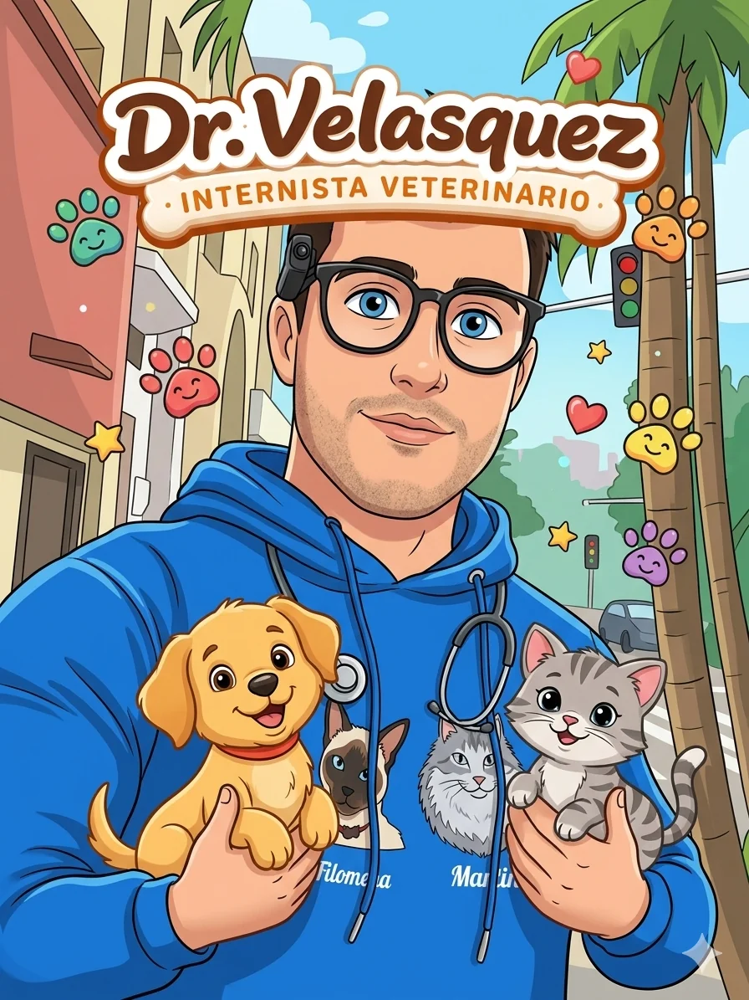
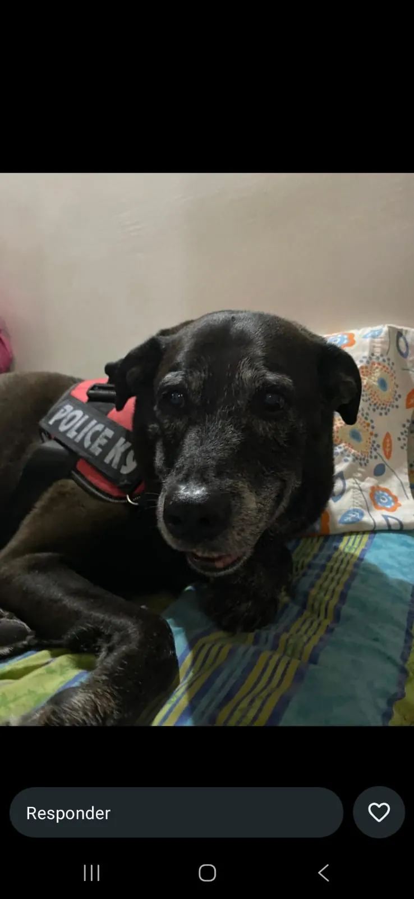
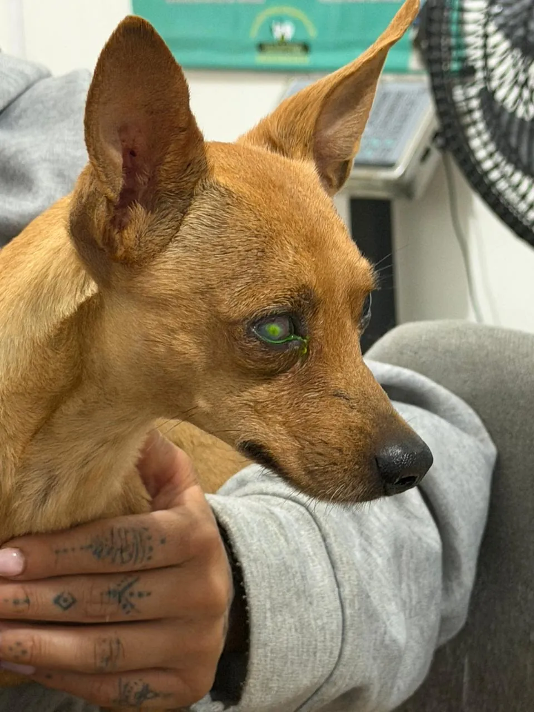
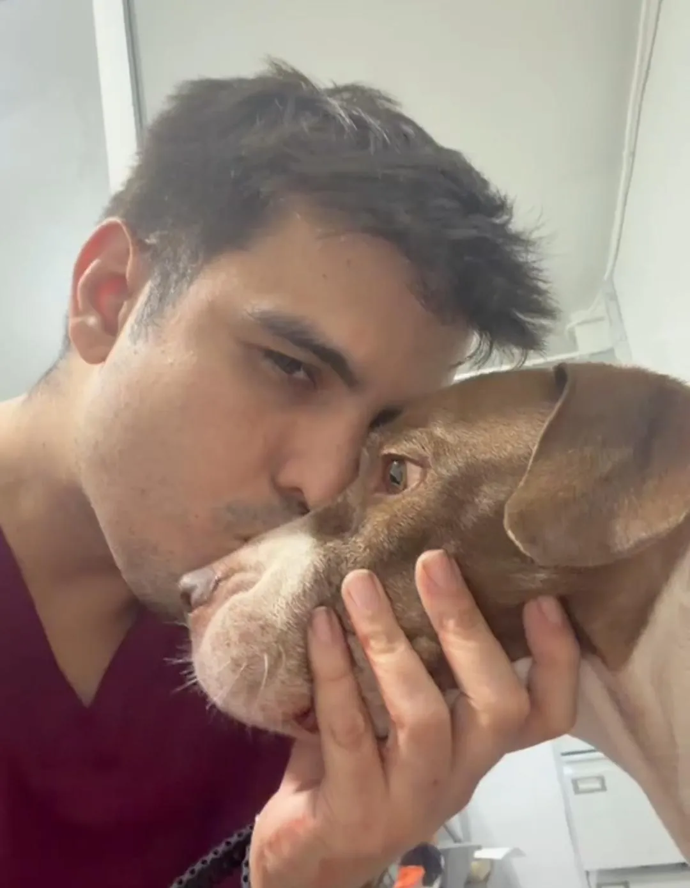

Atención veterinaria profesional, cálida y personalizada —
directamente en la comodidad de tu hogar. 🐾

Hola, soy el Dr. Germán Velásquez Gutiérrez, Médico Veterinario Internista con más de 14 años de experiencia cuidando la salud y el bienestar de las mascotas en clínicas de la ciudad de Medellín.
Mi pasión por los animales y por brindarles una atención más personalizada me llevó a especializarme en atención a domicilio, ya que creo que es mucho más cómodo y confortable para las mascotas realizar consultas o vacunaciones en casa, sin tener que estresarse al momento de salir.
Cuento con todos los equipos y medicamentos necesarios para brindarte una atención de primer nivel sin que tengas que salir de casa. Porque tu tiempo y la tranquilidad de tu mascota son lo más importante.
Trato a cada mascota como si fuera mía
Diagnóstico certero y tratamiento efectivo
Voy hasta donde estás tú y tu mascota
Atención veterinaria completa directamente en tu casa. Sin filas, sin estrés para tu mascota.
Cada visita es una historia de amor. Estos son algunos de mis peludos favoritos y cómo los ayudé.

Colapso agudo con dificultad respiratoria y deterioro hemodinámico. ECG y estabilización a domicilio.

Úlcera corneal diagnosticada a domicilio. Tratamiento médico y seguimiento hasta recuperación visual completa.

Linfoma diagnosticado y manejado a domicilio. Seguimiento oncológico y calidad de vida preservada.
¿Quieres que tu mascota aparezca aquí? ¡Escríbeme y compárteme su historia!
Me desplazo por toda el Área Metropolitana de Medellín y municipios cercanos.
¿No ves tu barrio? Escríbeme, seguro puedo llegar.
Consultar coberturaLa satisfacción de mis clientes y sus mascotas es mi mayor recompensa.
¿Tu mascota necesita atención? Contáctame y coordinamos la visita lo antes posible.